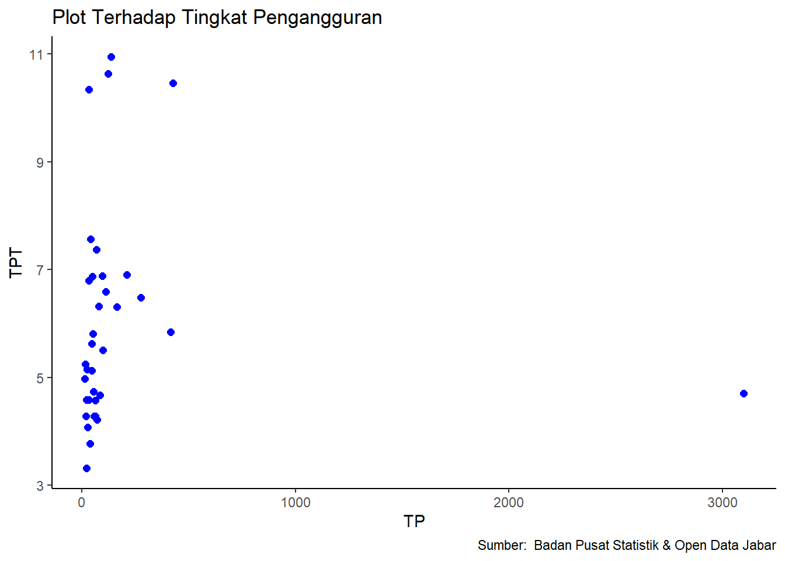

library(tidyverse)
library(readxl)Pengaruh Tingkat Pendidikan Terhadap Tingkat Pengangguran di Indonesia Pada Tahun 2020
Metode Penelitian Politeknik APP Jakarta

1 Pendahuluan
1.1 Latar belakang
Indonesia merupakan salah satu negara berkembang dalam pengelompokan negara berdasarkan taraf kesejahteraan masyarakatnya, dimana salah satu permasalahan yang dihadapi oleh negara-negara berkembang termasuk Indonesia adalah masalah pengangguran. Pengangguran merupakan masalah yang sangat kompleks karena mempengaruhi dan dipengaruhi oleh beberapa faktor yang saling berinteraksi mengikuti pola yang tidak selalu mudah untuk dipahami. Apabila masalah pengangguran tersebut tidak segera diatasi maka dapat menimbulkan kerawanan sosial. Salah satu faktor yang menyebabkan timbulnya pengangguran adalah faktor pendidikan yaitu minimnya pemahaman masyarakat akan pendidikan dan juga pelatihan. Pendidikan adalah hal penting untuk kemajuan suatu bangsa, untuk menjadi bangsa yang maju tentu merupakan cita-cita suatu negara di dunia. Pendidikan merupakan proses melahirkan generasi yang berkualitas. Pendidikan formal merupakan cara yang tepat untuk meningkatkan kualitas sumber daya manusia. Semakin tinggi pendidikan semakin tinggi kualitas tenaga kerja. Apabila semua tenaga kerja terlibat aktif dalam perekonomian, maka akan meningkatkan output barang dan jasa yang pada akhirnya dapat meningkatkan pertumbuhan ekonomi. Jika pertumbuhan ekonomi di suatu negara membaik maka hal tersebut akan meningkatkan investasi, dapat membuka lapangan kerja, menyerap angkatan kerja yang nantinya dapat mengurangi angka pengangguran. Semakin banyaknya orang yang menyelesaikan pendidikannya dengan berbagai jenjang pendidikan tetapi tidak dibarengi dengan penyediaan lapangan kerja atau penyerapan tenaga kerja dengan baik maka tingkat pengangguran terbuka akan terus meningkat. Pengangguran Terbuka merupakan indikator yang dapat digunakan untuk mengukur tingkat penawaran kerja yang tidak digunakan atau tidak terserap oleh pasar kerja. Pengangguran merupakan masalah yang rumit bagi setiap negara, tidak terkecuali bagi Indonesia. Permasalahan seputar pengangguran memang selalu menjadi pokok masalah sosial di negara berkembang seperti Indonesia. Pengangguran di negara-negara sedang berkembang pada dasarnya didominasi oleh pengangguran usia muda dan pengangguran berpendidikan. Tingkat pengangguran tinggi menyebabkan sumber daya manusia terbuang percuma dan tingkat pendapatan masyarakat merosot jika hal ini terjadi maka hal tersebut akan mempengaruhi minat investor untuk berinvestasi di negara tersebut. Karena investor akan mempertimbangkan negara dengan penduduk usia produktif tinggi dan kualitas sumber daya manusia yang baik sebelum melakukan investasi.
1.2 Ruang lingkup
Dalam penelitian ini penulis mengambil objek atau data penelitian dari Badan Pusat Statistik (BPS). Adapun ruang lingkup penelitian ini terdapat dua (2) variabel antara lain tingkat pendidikan dan tingkart pengangguran. Data yang digunakan adalah data pada tahun 2020
1.3 Rumusan masalah
- Apakah tingkat pendidikan berpengaruh terhadap tingkat pengangguran?
- Bagaimana pengaruh tingkat pendidikan terhadap tingkat pengangguran?
1.4 Tujuan dan manfaat penelitian
Secara Teoritis Penelitian ini diharapkan dapat memperluas wawasan teori atau ilmu pengetahuan khususnya dalam disiplin ilmu ekonomi, terutama untuk mengurangi jumlah pengangguran terutama pengangguran terdidik.
Secara Praktis Penelitian ini diharapkan mampu memberikan referensi bagi orang yang membutuhkan dalam rangka untuk mengurangi pengangguran.
1.5 Package
2 Studi pustaka
1.Pendidikan
Kata pendidikan berasal dari kata ‘didik’ dan mendapat imbuhan ‘pe’ dan akhiran ‘an’, maka kata ini mempunyai arti proses atau cara atau perbuatan mendidik. Secara bahasa definisi pendidikan adalah proses pengubahan sikap dan tata laku seseorang atau kelompok orang dalam usaha mendewasakan manusiamelalui upaya pengajaran dan pelatihan. Menurut Ki Hajar Dewantara (Bapak Pendidikan Nasional Indonesia) menjelaskan tentang pengertian pendidikan yaitu: Pendidikan yaitu tuntutan di dalam hidup tumbuhnya anak-anak, adapun maksudnya, pendidikan yaitu menuntun segala kekuatan kodrat yang ada pada anak-anak itu, agar mereka sebagai manusia dan sebagai anggota masyarakat dapatlah mencapai keselamatan dan kebahagiaan setinggi-tingginya.
2.Pengangguran
Pengangguran adalah keadaan menganggur atau tidak melakukan apa-apa atau tidak bekerja. Pengangguran dikaitkan dengan terbatasnya lapangan pekerjaan dan mutu pendidikan. International Labor Organization (ILO) menyampaikan dua bentuk pengangguran, yaitu pengangguran terbuka dan setengah pengangguran terpaksa. Pengangguran terbuka adalah seseorang dalam kelompok penduduk usia kerja yang tidak bekerja selama periode tertentu dan bersedia menerima atau mencari pekerjaan. Sedangkan setengah pengangguran terpaksa adalah seseorang yang bekerja sebagai buruh karyawan dan pekerja mandiri yang selama periode tertentu terpaksa bekerja kurang dari jam kerja normal. Pengangguran secara umum merupakan orang yang tidak bekerja sama sekali, sedang mencari kerja, bekerja kurang dari dua hari selama seminggu atau seseorang yang sedang berusaha mendapatkan pekerjaan yang layak.
3 Metode penelitian
3.1 Data
| Provinsi | TP |
| Aceh | 112 |
| Sumatera Utara | 210 |
| Sumatera Barat | 94 |
| Riau | 79 |
| Jambi | 47 |
| Sumatera Selatan | 99 |
| Bengkulu | 26 |
| Lampung | 83 |
| Kepulauan Bangka Belitung | 17 |
| Kepulauan Riau | 33 |
| DKI Jakarta | 137 |
| Jawa Barat | 426 |
| Jawa Tengah | 276 |
| DI Yogyakarta | 62 |
| Jawa Timur | 415 |
| Banten | 123 |
| Bali | 47 |
| Nusa Tenggara Barat | 70 |
| Nusa Tenggara Timur | 63 |
| Kalimantan Barat | 51 |
| Kalimantan Tengah | 20 |
| Kalimantan Selatan | 54 |
| Kalimantan Timur | 48 |
| Kalimantan Utara | 13 |
| Sulawesi Utara | 69 |
| Sulawesi Tengah | 37 |
| Sulawesi Selatan | 163 |
| Sulawesi Tenggara | 33 |
| Gorontalo | 18 |
| Sulawesi Barat | 21 |
| Maluku | 40 |
| Maluku Utara | 23 |
| Papua Barat | 32 |
| Papua | 57 |
| Indonesia | 3098 |
| Provinsi | TPT |
| Aceh | 6.59 |
| Sumatera Utara | 6.91 |
| Sumatera Barat | 6.88 |
| Riau | 6.32 |
| Jambi | 5.13 |
| Sumatera Selatan | 5.51 |
| Bengkulu | 4.07 |
| Lampung | 4.67 |
| Kepulauan Bangka Belitung | 5.25 |
| Kepulauan Riau | 10.34 |
| DKI Jakarta | 10.95 |
| Jawa Barat | 10.46 |
| Jawa Tengah | 6.48 |
| DI Yogyakarta | 4.57 |
| Jawa Timur | 5.84 |
| Banten | 10.64 |
| Bali | 5.63 |
| Nusa Tenggara Barat | 4.22 |
| Nusa Tenggara Timur | 4.28 |
| Kalimantan Barat | 5.81 |
| Kalimantan Tengah | 4.58 |
| Kalimantan Selatan | 4.74 |
| Kalimantan Timur | 6.87 |
| Kalimantan Utara | 4.97 |
| Sulawesi Utara | 7.37 |
| Sulawesi Tengah | 3.77 |
| Sulawesi Selatan | 6.31 |
| Sulawesi Tenggara | 4.58 |
| Gorontalo | 4.28 |
| Sulawesi Barat | 3.32 |
| Maluku | 7.57 |
| Maluku Utara | 5.15 |
| Papua Barat | 6.80 |
| Papua | 4.28 |
| Indonesia | 7.07 |
Penelitian ini menggunakan data Tingkat Pendidikan dan Tingkat Pengangguran dari Badan Pusat Statistik(BPS)
dat<-read_excel('TPTTP.xlsx')
library(ggplot2)
ggplot(data=dat, aes(x=TP, y=TPT))+
geom_point(color='blue', size=2)+
labs(title="Plot Terhadap Tingkat Pengangguran",
x="TP",
y="TPT",
caption = "Sumber: Badan Pusat Statistik & Open Data Jabar")+
theme_classic()
3.2 Metode analisis
Metode yang dipilih adalah regresi univariat atau Ordinary Least Square (OLS) dengan 1 variabel independen. Penelitian ini merbaksud mencari hubungan antara TP dan TPT. Spesifikasi yang dilakukan adalah:
\[ y_{t}=\beta_0 + \beta_1 x_t+\mu_t \] di mana \(y_t\) adalah TPT dan \(x_t\) adalah TP.
4 Pembahasan
4.1 Pembahasan masalah
Pada bagian ini dapat ditampilkan data dan visualisasi data yang telah dikumpulkan.
4.2 Analisis masalah
Hasil regresinya adalah
reg<-lm(TP~TPT,data=dat)
summary(reg)
Call:
lm(formula = TP ~ TPT, data = dat)
Residuals:
Min 1Q Median 3Q Max
-176.88 -146.91 -124.75 -68.26 2910.87
Coefficients:
Estimate Std. Error t value Pr(>|t|)
(Intercept) 223.765 284.898 0.785 0.438
TPT -7.795 45.151 -0.173 0.864
Residual standard error: 525.5 on 33 degrees of freedom
Multiple R-squared: 0.0009025, Adjusted R-squared: -0.02937
F-statistic: 0.02981 on 1 and 33 DF, p-value: 0.864library(readxl)
dat<-read_excel("TPTTP.xlsx")
reg<-lm(TPT~TP,data=dat)
summary(reg)
Call:
lm(formula = TPT ~ TP, data = dat)
Residuals:
Min 1Q Median 3Q Max
-2.6935 -1.4329 -0.4945 0.8237 4.9499
Coefficients:
Estimate Std. Error t value Pr(>|t|)
(Intercept) 6.0159233 0.3623150 16.604 <2e-16 ***
TP -0.0001158 0.0006705 -0.173 0.864
---
Signif. codes: 0 '***' 0.001 '**' 0.01 '*' 0.05 '.' 0.1 ' ' 1
Residual standard error: 2.025 on 33 degrees of freedom
Multiple R-squared: 0.0009025, Adjusted R-squared: -0.02937
F-statistic: 0.02981 on 1 and 33 DF, p-value: 0.8645 Kesimpulan
Ada pengaruh tingkat pendidikan terhadap tingkat pengangguran, variabel tingkat pendidikan memiliki pengaruh positif yang signifikan terhadap tingkat pengangguran.Berarti bahwa semakin tinggi tingkat pendidikan akan semakin tinggi tingkat pengangguran. Peningkatan pendidikan ditandai dengan meningkatnya jumlah lulusan sehingga akan meningkatkan kemampuan tenaga kerja yang akan menambah daya saing tenaga kerja tersebut dan meningkatkan pengangguran.
6 Referensi
Suprayitno, I. J., Darsyah, M. Y., & Rahayu, U. S. (2017). Pengaruh tingkat pendidikan terhadap jumlah pengangguran di kota Semarang. In PROSIDING SEMINAR NASIONAL & INTERNASIONAL (Vol. 1, No. 1).
Badan Pusat Statistik. (n.d.). Retrieved January 23, 2024, from https://www.bps.go.id/id/statistics-table/3/jumlah-desa-sup-1-sup-kelurahan-yang-memiliki-fasilitas-sekolah-menurut-provinsi-dan-tingkat-pendidikan.html?year=2020
Badan Pusat Statistik. (n.d.). Retrieved January 23, 2024, from https://www.bps.go.id/id/statistics-table/3/tingkat-pengangguran-terbuka-tpt-dan-tingkat-partisipasi-angkatan-kerja-tpak-menurut-provinsi.html?year=2020